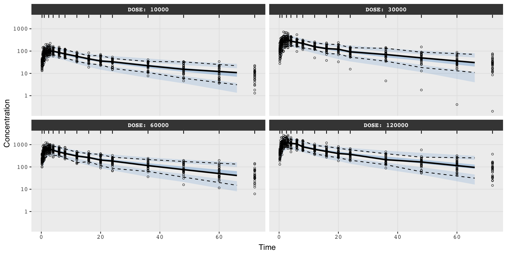

nlmixr project status
The nlmixr package
- Go through the steps of
- Simple example to consider the setup
- Introduce dataset
- Fit 3 models
- 1 compartment without depot
- 1 compartment with depot
- 2 compartment with depot
- What we are looking into now
object
The first argument object, describes the setup of the model
one_compartment_depot <- function() {
ini({
tka <- log(1.6)
tcl <- log(2.7)
tv <- log(31.5)
eta.ka ~ log(1.8)
eta.cl ~ log(1.4)
eta.v ~ log(1.1)
add.sd <- log(2)
})
model({
ka <- exp(tka + eta.ka)
cl <- exp(tcl + log(WT) + eta.cl)
v <- exp(tv + log(WT) + eta.v)
d/dt(depot) = -ka * depot
d/dt(central) = ka * depot - cl / v * central
cp = central / v
cp ~ add(add.sd)
})
}ini-block
- FEs are initialized using
<-or=.
- REs are assumed to be normally distributed with mean \(0\), the variance is specified with
~.
- Estimation boundaries may be specified with
c(lower, est, upper)e.g.
tcl <- c(log(1), log(2.7), log(100))
- Both FE and RE values are in log scale.
- The initial error model value \(\sigma\), is specified.
- Correlated REs can have specified initial \(\Omega\) values, e.g.
model-block
Subject-specific parameters included are: \[\theta_i = (K_{a,i}, Cl_i, V_{d,i}).\]
These parameters are defined as: \[\begin{align*}
K_{a,i} &= \exp(\beta_1 + \eta_{i,1}),\\
Cl_i &= \exp(\beta_2 + \beta_3 \cdot \log(WT_i) + \eta_{i,2}),\\
V_{d,i} &= \exp(\beta_4 + \beta_5 \cdot \log(WT_i) + \eta_{i,3}).\\
\end{align*}\] Where:
- Covariates: \(a_i = (WT_i)\), (weight)
- Random effects: \(\eta_i=(\eta_{i,1},\eta_{i,2},\eta_{i,3})^\top\)
- Fixed effects: \(\beta_i = (\beta_{i,1}, \beta_{i,2}, \beta_{i,3}, \beta_{i,4}, \beta_{i,5})^\top\)
model-block cont.
As it is a one-compartment model with depot, the ODEs are defined as:
Depot compartment: \[\frac{dA_D(t)}{dt} = -K_a \cdot A_D(t)\]
Central compartment: \[\frac{dA_c(t)}{dt} = K_a \cdot A_D(t) - \frac{Cl}{V} \cdot A_c(t)\]
If the ODEs are included within the model argument, the function nlmixr finds the solutions to these ODEs.
If not, the
linCmt()can be used in the model block to let nlmixr determine the number of compartments and whether to include a depot.
model-block cont.
The concentration in the central compartment is defined as: \[cp = \frac{\text{central}}{V}\]
The additive error model is included, that has the argument add(parameter).
- If the proportional error model was desired the argument to include is prop(parameter).
- If the combined error model was desired the argument to include is add(parameter1) + prop(parameter2)
data
- ID - Unique subject identifier
- TIME - Time
- DV - Dependent variable
- AMT - Amount or rate
- For an oral dose: amount of drug
- For an i.v. bolus dose: amount of drug
- For an i.v. infusion: 1 record at the start of the infusion with infusion rate of drug; 1 record at end of infusion with -1 * infusion rate of drug
- EVID - Event identifier
est
The third argument in the nlmixr() function, est, specifies the estimation method to use.
The available estimation methods:
- focei
- foce
- foi
- fo
- saem
The fourth argument, control, provides options to customize the chosen estimation method. For example:
- If est = "focei", then control = foceiControl().
- If est = "saem", then control = saemControl().
Fitting the model
With the specified model, data, and the estimation method, the model is fitted as
Results
── nlmixr² FOCEi (outer: nlminb) ──
OBJF AIC BIC Log-likelihood Condition#(Cov) Condition#(Cor)
FOCEi 115.9891 372.5889 392.7685 -179.2944 84.37383 9.857612
── Time (sec $time): ──
setup optimize covariance table compress other
elapsed 0.019402 0.223597 0.223597 0.041 0.005 4.544404
── Population Parameters ($parFixed or $parFixedDf): ──
Est. SE %RSE Back-transformed(95%CI) BSV(CV%) Shrink(SD)%
tka 0.463 0.193 41.7 1.59 (1.09, 2.32) 73.4 1.89%
tcl -3.22 0.0755 2.35 0.04 (0.0345, 0.0463) 26.9 3.97%
tv -0.777 0.0397 5.1 0.46 (0.425, 0.497) 13.7 10.2%
add.sd 0.689 0.689
Covariance Type ($covMethod): r,s
No correlations in between subject variability (BSV) matrix
Full BSV covariance ($omega) or correlation ($omegaR; diagonals=SDs)
Distribution stats (mean/skewness/kurtosis/p-value) available in $shrink
Information about run found ($runInfo):
• gradient problems with initial estimate and covariance; see $scaleInfo
• ETAs were reset to zero during optimization; (Can control by foceiControl(resetEtaP=.))
• initial ETAs were nudged; (can control by foceiControl(etaNudge=., etaNudge2=))
Censoring ($censInformation): No censoring
Minimization message ($message):
relative convergence (4)
── Fit Data (object is a modified tibble): ──
# A tibble: 132 × 23
ID TIME DV PRED RES WRES IPRED IRES IWRES CPRED CRES CWRES
<fct> <dbl> <dbl> <dbl> <dbl> <dbl> <dbl> <dbl> <dbl> <dbl> <dbl> <dbl>
1 1 0 0.74 0 0.74 1.07 0 0.74 1.07 0 0.74 1.07
2 1 0.25 2.84 2.83 0.00619 0.00363 3.86 -1.02 -1.48 2.67 0.166 0.0758
3 1 0.57 6.57 5.06 1.51 0.670 6.78 -0.210 -0.304 4.83 1.74 0.622
# ℹ 129 more rows
# ℹ 11 more variables: eta.ka <dbl>, eta.cl <dbl>, eta.v <dbl>, depot <dbl>,
# central <dbl>, ka <dbl>, cl <dbl>, v <dbl>, tad <dbl>, dosenum <dbl>,
# WT <dbl>Statistical fit metrics
OBJF - Objective function value
AIC - Akaike Information Criterion
BIC - Bayesian Information Criterion
Log-likelihood - Log-likelihood value of the fitted model
Condition#(Cov) - Condition number related to the covariance matrix
Condition#(Cor) - Condition number related to the correlation matrix
Population parameters statistics
Est. - Estimated parameter value
SE - Standard error of the estimate
%RSE - Relative standard error percentage
Back-transformed(95%CI) - 95% Confidence interval of the back-transformed estimate
BSV(CV%) - Between-subject variability as a coefficient of variation percentage
Shrink(SD)% - Percentage of shrinkage of the standard deviation estimate
Fitted values
ID - Subject ID
TIME - Time
DV - Drug concentration
PRED - Predicted drug concentration
RES - Residuals
WRES - Weighted residuals
IPRED - Individual predicted concentrations
IRES - Individual residuals
IWRES - Individual weighted residuals
CPRED - Conditional predicted concentrations
CRES - Conditional residuals
CWRES - Conditional weighted residuals
The Oral_2CPT data set
- Subset of Oral_2CPT
- Simulated rich sample profiles
- 4 different dose levels (10, 30, 60 and 120 mg)
- 30 subjects each as single dose (over 72h)
- 2-compartment model with 1st order absorption, with linear clearance
- Inter-individual variabilities are 30%
- Residual error at 20%
The Oral_2CPT data set cont.
'data.frame': 2400 obs. of 6 variables:
$ ID : int 1 1 1 1 1 1 1 1 1 1 ...
$ TIME: num 0 0.25 0.5 0.75 1 1.5 2 2.5 3 4 ...
$ DV : num 0 196 310 640 423 ...
$ LNDV: num 0 5.28 5.74 6.46 6.05 ...
$ AMT : int 60000 0 0 0 0 0 0 0 0 0 ...
$ EVID: int 1 0 0 0 0 0 0 0 0 0 ...ID - Simulated Subject ID
TIME - Simulated Time
DV - Simulated Dependent Variable
LNDV - Simulated log(Dependent Variable)
AMT - Dosing AMT
EVID - NONMEM Event ID
The data

1 compartment without depot
one.cmt <- function() {
ini({
# Fixed effects
tcl <- log(4) # Clearance
tvc <- log(70) # Volume, central
# Random effects
eta.cl ~ 0.5
eta.vc ~ 0.5
# Residual error
prop.err <- 0.1
})
model({
# Model for theta
cl <- exp(tcl + eta.cl)
vc <- exp(tvc + eta.vc)
# Specify system of ODEs
d/dt(central) = - cl/vc * central
# Model concentration in plasma
conc <- central / vc
# with proportional error model
conc ~ prop(prop.err)
})
}
# Fit the model using focei estimation
fit_1cpt <- nlmixr(one.cmt, dataSD, est = "focei",
control=list(print=0,outerOpt="bobyqa"))1 compartment without depot cont.
1 compartment with depot
one.cmt.depot <- function() {
ini({
# Fixed effects
tka <- log(1) # Absorption
tcl <- log(4) # Clearance
tvc <- log(70) # Volume, central
# Random effects
eta.ka ~ 0.5
eta.cl ~ 0.5
eta.vc ~ 0.5
# Residual error
prop.err <- 0.1
})
model({
# Model for theta
ka <- exp(tka + eta.ka)
cl <- exp(tcl + eta.cl)
vc <- exp(tvc + eta.vc)
# Specify system of ODEs
d/dt(depot) = -ka * depot
d/dt(central) = ka * depot - cl/vc * central
# Model concentration in plasma
conc <- central / vc
# with proportional error model
conc ~ prop(prop.err)
})
}
# Fit the model using focei estimation
fit_1cptdepot <- nlmixr(one.cmt.depot, dataSD, est = "focei",
control=list(print=0,outerOpt="bobyqa"))1 compartment with depot cont.
2 compartment with depot
two.cmt.depot <- function() {
ini({
# Fixed effects
tka <- log(1) # Absorption
tq <- log(4) # Inter-compartmental clearance
tcl <- log(4) # Clearance
tvc <- log(70) # Volume, central
tvp <- log(50) # Volume, peripheral
# Random effects
eta.ka ~ 0.5
eta.cl ~ 0.5
eta.vc ~ 0.5
eta.vp ~ 0.5
eta.q ~ 0.5
# Residual error
prop.err <- 0.1
})
model({
# Model for theta
ka <- exp(tka + eta.ka)
cl <- exp(tcl + eta.cl)
vp <- exp(tvp + eta.vp)
vc <- exp(tvc + eta.vc)
q <- exp(tq + eta.q)
# Specify system of ODEs
d/dt(depot) = -ka * depot
d/dt(central) = ka * depot - cl/vc * central + q/vp * peripheral - q/vc * central
d/dt(peripheral) = q/vc * central - q/vp * peripheral
# Model concentration in plasma
conc <- central / vc
# with proportional error model
conc ~ prop(prop.err)
})
}
# Fit the model using focei estimation
fit2cptdepot <- nlmixr(two.cmt.depot, dataSD, est = "focei",
control=list(print=0,outerOpt="bobyqa"))2 compartment with depot cont.
Goodness of fit for 2-CPT w. depot
- Visual predictive check for the 2-CPT model w. depot.
- Black points are original observations.
- Solid black line is the observed median.
- Dashed black lines represent observed 5th and 95th percentiles.
- Blue shaded areas represent 90% confidence intervals around simulated 5th, 50th, and 95th percentiles.
Goodness of fit for 2-CPT w. depot cont.
What we are looking into now
- Investigate fitting process of
nlimxr() - Fit models to data from Otto
- Perhpas it is more sparsesome sample profiles that will present new challenges